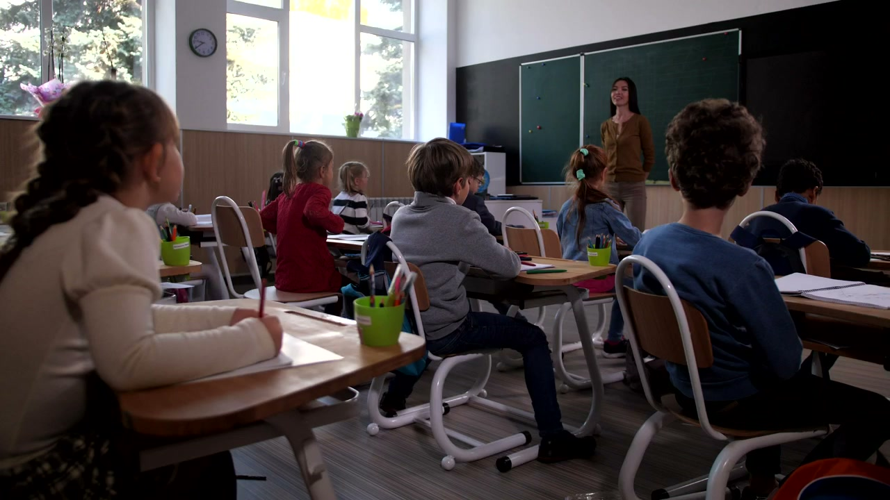
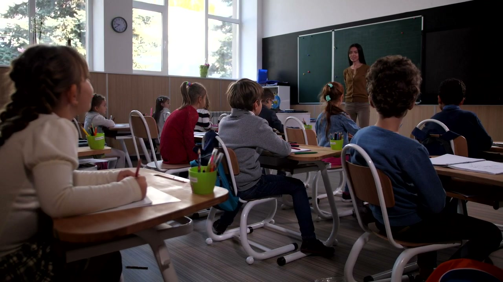

01 / SOP
SOP 落地难
规程以文档为主，执行情况依赖人员自觉和抽查。
实验室通常并不缺少操作规程，真正的挑战在于确保 SOP 在每一次实验过程中得到执行，并及时发现偏差。平台不是再增加一套录像系统，而是让现有监控具备理解实验流程、发现操作偏差和推动风险处置的能力。
规程以文档为主，执行情况依赖人员自觉和抽查。
人工巡检存在时间与空间盲区，无法持续覆盖所有区域。
普通视频监控主要记录画面，缺少 SOP 业务语义。
发现、确认、整改、复核和追溯分散在不同环节。
从 SOP 数字化开始，到 AI 感知、合规判断、主动预警和闭环追溯，形成完整监管链路。
文档解析、人工审核，将静态制度转化为结构化监管标准。
识别人员、PPE、器具、设备和可观测操作行为。
关联 AI 感知结果与正式 SOP，检查步骤和前置条件。
依据风险等级、可信度和异常持续时间执行分级策略。
关联任务、SOP 版本、事件、处置记录和视频证据。
支持 PDF、Word 或扫描版 SOP，辅助提取实验步骤、前置条件、操作要求和风险提示；经专业人员审核后发布正式版本。
接入现有网络摄像头，识别人员、实验服、护目镜、手套、器具、设备及连续操作行为。

检查必须执行的操作、实验步骤顺序、前置条件以及操作持续时间，并支持视频与设备数据联合校验。

综合 SOP 风险等级、识别可信度和异常持续时间，形成提示、一般、严重、紧急等分级处置策略。
AI 提高 SOP 解析和配置效率，实验室专业人员保留审核权和发布权，确保正式 SOP 始终是监管判断依据。
实验人员仍按正常流程自主操作，AI 在后台持续监管。平台根据风险等级执行分级告警，并保留人工确认与专业处置机制。
AI 负责感知，规则引擎负责确定性合规判断，Agent 负责复杂分析与辅助决策。VLM 不单独承担实时步骤判定。
识别实验服、护目镜、手套等防护装备佩戴情况，按规则提醒相关人员。
结合连续行为识别和 SOP 前置条件，发现疑似步骤遗漏与顺序异常。
针对已定义的高风险操作配置专项规则，结合视频、设备数据和人工复核。
接入设备运行状态及环境数据，对视频无法直接观测的参数进行联合判断。
免责声明：平台识别能力受摄像头视角、光照、遮挡、实验环境、模型配置和部署条件影响。视频无法直接观测的试剂浓度、反应结果及设备内部参数，应结合设备数据或人工确认。平台用于辅助实验室安全管理，不替代专业人员判断、法定责任及实验室应急预案。
结合现有摄像头、实验设备与 SOP，构建适合实验室实际流程的主动式合规监管方案。